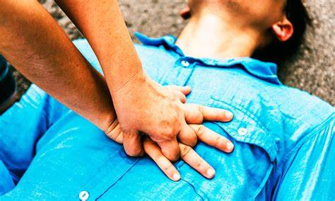
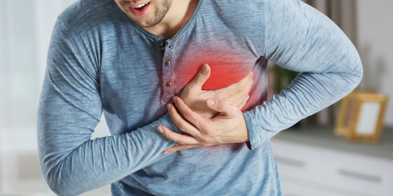
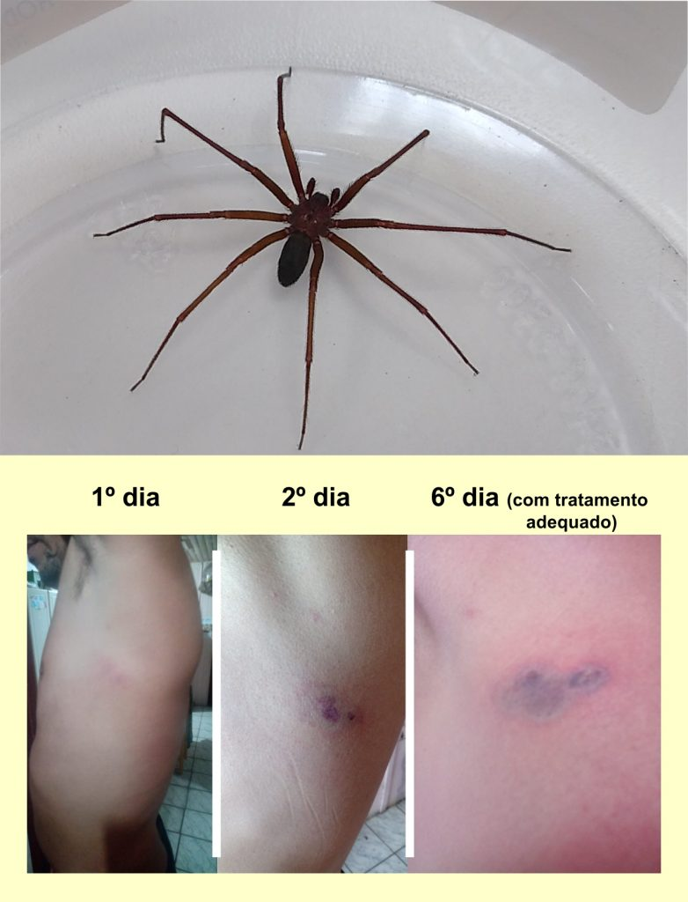

Procedimentos de Emergência
RCP (Ressuscitação Cardiopulmonar)
- Posicione as mãos sobre o centro do peito da vítima.
- Realize 30 compressões torácicas seguidas de 2 ventilações.
- Continue até a chegada do socorro ou a vítima recuperar os sinais vitais.
Pressão Arterial

- Hipertensão (Pressão Alta): Pode causar AVC, infarto e insuficiência renal.
- Hipotensão (Pressão Baixa): Pode causar tontura, desmaios e choque circulatório.
- Se alta: evite sal, relaxe e procure ajuda médica.
- Se baixa: beba água, deite-se e levante as pernas.
Infarto (Ataque Cardíaco)
- Dor intensa no peito, irradiando para braço e mandíbula.
- Dificuldade para respirar, suor excessivo e náusea.
- Chame o socorro imediatamente e mantenha a vítima calma.
Engasgo

- Se a pessoa não conseguir respirar ou falar, realize a manobra de Heimlich.
- Fique atrás, pressione a barriga para cima com força.
- Repita até o objeto ser expelido ou a vítima desmaiar.
Afogamento

- Retire a vítima da água com segurança.
- Se não respirar, inicie a RCP imediatamente.
- Evite entrar na água se não tiver treinamento adequado.
Choque Elétrico

- Desligue a fonte de energia antes de tocar na vítima.
- Se não respirar, inicie a RCP.
- Leve a vítima ao hospital, pois choques podem causar danos internos.
Picadas de Animais Peçonhentos
- Mantenha a vítima calma e imóvel.
- Não tente sugar o veneno ou cortar o local.
- Leve a vítima rapidamente ao hospital e, se possível, identifique o animal.
Convulsões

- Deite a vítima de lado para evitar que se engasgue com a língua.
- Proteja a cabeça da vítima para evitar lesões.
- Não tente segurar a vítima, deixe que ela se mova livremente.
- Chame a emergência imediatamente.
Acidente de Trânsito

- Verifique se há riscos de incêndio ou outros perigos.
- Chame o socorro e evite mover as vítimas, a menos que esteja em risco de fogo ou explosão.
- Se a vítima estiver inconsciente, verifique a respiração e inicie a RCP se necessário.
Números de Emergência:
- SAUR: 192
- Bombeiros: 193
- Polícia Militar: 190
- Guarda Municipal: 153
Dicas Importantes
- Sempre mantenha a calma, isso ajudará você a tomar melhores decisões.
- Conheça os primeiros socorros básicos, esses conhecimentos podem salvar vidas.
- Tenha sempre um número de emergência à mão e em local visível.